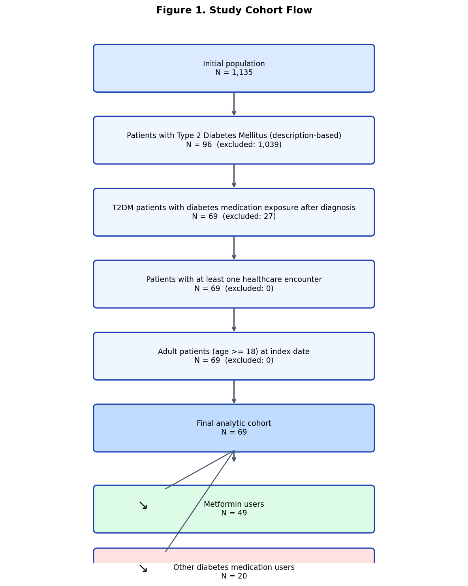

Real-World Evidence Report — Synthetic RWE Diabetes Treatment Study
Comparative Effectiveness: Metformin vs Other Diabetes Medications
Research question: What is the causal effect of diabetes pharmacotherapy (metformin vs other diabetes medications) on the composite outcome of diabetes-related complications or hospitalization?
Type 2 diabetes mellitus requires long-term pharmacotherapy. Metformin is typically first-line therapy, but patients with advanced disease or contraindications may initiate other agents (e.g., insulin). Observational comparative effectiveness research can inform treatment decisions when randomized trials are unavailable, provided rigorous causal methods address confounding by indication.
Baseline characteristics were compared using Table 1 with standardized mean differences (SMD). Outcomes were summarized as event counts, percentages, and rates per 100 patient-years. Kaplan-Meier and log-rank tests assessed time to primary composite event. Causal effects were estimated using 1:1 propensity score matching, stabilized IPTW (ATE and ATT), and multivariable logistic regression, supplemented by doubly robust AIPW (Step 7).
The analytic cohort comprised 69 patients selected through sequential eligibility criteria applied to the Synthea patient population (Figure 1).

Baseline characteristics differed between treatment groups before adjustment. 3 of 17 evaluated variables achieved |SMD| < 0.1 (18%), indicating incomplete balance at baseline. Older age, higher comorbidity burden, and greater diabetic nephropathy prevalence in the other-medication group suggest confounding by indication.
| Category | Variable | Metformin users | Other diabetes medication users | Overall (N=69) | SMD | Balanced (|SMD|<0.1) | P-value | Sig. |
|---|---|---|---|---|---|---|---|---|
| Demographics | N | 49 | 20 | 69 | 0.000 | True | NaN | NaN |
| Demographics | Age, years — mean (SD) | 54.8 (11.8) | 69.4 (16.1) | 59.1 (14.7) | -1.036 | False | 0.0003 | *** |
| Demographics | Age, years — median (IQR) | 51.2 (47.6–63.2) | 66.1 (56.1–81.5) | 55.6 (49.4–66.8) | NaN | NaN | NaN | NaN |
| Demographics | Age, years — min / max | 36.3 / 95.9 | 44.6 / 99.8 | 36.3 / 99.8 | NaN | NaN | NaN | NaN |
| Demographics | Gender: F | 24 (49.0%) | 13 (65.0%) | 37 (53.6%) | -0.322 | False | 0.3448 | NS |
| Demographics | Gender: M | 25 (51.0%) | 7 (35.0%) | 32 (46.4%) | 0.322 | False | NaN | NaN |
| Demographics | Race: asian | 1 (2.0%) | 0 (0.0%) | 1 (1.4%) | 0.202 | False | 0.4631 | NS |
| Demographics | Race: black | 2 (4.1%) | 3 (15.0%) | 5 (7.2%) | -0.370 | False | NaN | NaN |
| Demographics | Race: hawaiian | 1 (2.0%) | 0 (0.0%) | 1 (1.4%) | 0.202 | False | NaN | NaN |
| Demographics | Race: native | 1 (2.0%) | 0 (0.0%) | 1 (1.4%) | 0.202 | False | NaN | NaN |
| Demographics | Race: white | 44 (89.8%) | 17 (85.0%) | 61 (88.4%) | 0.142 | False | NaN | NaN |
| Clinical characteristics | Hypertension | 27 (55.1%) | 12 (60.0%) | 39 (56.5%) | -0.097 | True | 0.9166 | NS |
| Clinical characteristics | Hyperlipidemia | 8 (16.3%) | 4 (20.0%) | 12 (17.4%) | -0.094 | True | 0.7343 | NS |
| Clinical characteristics | Obesity | 49 (100.0%) | 14 (70.0%) | 63 (91.3%) | 0.902 | False | 0.0003 | *** |
| Clinical characteristics | Cardiovascular disease | 11 (22.4%) | 10 (50.0%) | 21 (30.4%) | -0.587 | False | 0.0490 | * |
| Clinical characteristics | Chronic kidney disease | 7 (14.3%) | 13 (65.0%) | 20 (29.0%) | -1.188 | False | 0.0001 | *** |
| Clinical characteristics | Diabetic nephropathy | 7 (14.3%) | 16 (80.0%) | 23 (33.3%) | -1.716 | False | 0.0000 | *** |
| Clinical characteristics | Diabetic neuropathy | 5 (10.2%) | 5 (25.0%) | 10 (14.5%) | -0.388 | False | 0.1399 | NS |
| Clinical characteristics | Diabetic retinopathy | 1 (2.0%) | 1 (5.0%) | 2 (2.9%) | -0.158 | False | 0.4987 | NS |
Treatment exposure was defined at the first diabetes medication after T2DM diagnosis (index date). During follow-up, 26.1% of patients switched medication class and 26.1% used multiple diabetes drug classes when switchers are included.
Unadjusted outcome rates for the primary composite were Metformin users: 37/49 events (75.5%; 8.9 per 100 patient-years); Other diabetes medication users: 18/20 events (90.0%; 11.6 per 100 patient-years).
| Outcome | Treatment group | N patients | N events | Event rate (%) | Person-years | Events per 100 PY | Odds ratio | 95% CI | P-value | Mean follow-up (years) | Median follow-up (years) | Median event-free days | Log-rank p-value |
|---|---|---|---|---|---|---|---|---|---|---|---|---|---|
| Cardiovascular Event | Metformin users | 49 | 13.0 | 26.5 | 414.7 | 3.13 | — | — | — | — | — | — | — |
| Cardiovascular Event | Other diabetes medication users | 20 | 5.0 | 25.0 | 155.9 | 3.21 | — | — | — | — | — | — | — |
| Cardiovascular Event | Overall | 69 | 18.0 | 26.1 | 570.6 | 3.15 | — | — | — | — | — | — | — |
| Diabetes Complication | Metformin users | 49 | 16.0 | 32.7 | 414.7 | 3.86 | — | — | — | — | — | — | — |
| Diabetes Complication | Other diabetes medication users | 20 | 10.0 | 50.0 | 155.9 | 6.42 | — | — | — | — | — | — | — |
| Diabetes Complication | Overall | 69 | 26.0 | 37.7 | 570.6 | 4.56 | — | — | — | — | — | — | — |
| Hospitalization Event | Metformin users | 49 | 33.0 | 67.3 | 414.7 | 7.96 | — | — | — | — | — | — | — |
| Hospitalization Event | Other diabetes medication users | 20 | 17.0 | 85.0 | 155.9 | 10.91 | — | — | — | — | — | — | — |
| Hospitalization Event | Overall | 69 | 50.0 | 72.5 | 570.6 | 8.76 | — | — | — | — | — | — | — |
| Primary Composite Event | Metformin users | 49 | 37.0 | 75.5 | 414.7 | 8.92 | — | — | — | — | — | — | — |
| Primary Composite Event | Other diabetes medication users | 20 | 18.0 | 90.0 | 155.9 | 11.55 | — | — | — | — | — | — | — |
| Primary Composite Event | Overall | 69 | 55.0 | 79.7 | 570.6 | 9.64 | — | — | — | — | — | — | — |
| Primary Composite Event (unadjusted OR) | Other vs Metformin | 69 | 55.0 | — | — | — | 2.92 | 0.59–14.45 | 0.1893 | — | — | — | — |
| Diabetes Complication (unadjusted OR) | Other vs Metformin | 69 | 26.0 | — | — | — | 2.06 | 0.71–5.96 | 0.1810 | — | — | — | — |
| Cardiovascular Event (unadjusted OR) | Other vs Metformin | 69 | 18.0 | — | — | — | 0.92 | 0.28–3.05 | 0.8955 | — | — | — | — |
| Hospitalization Event (unadjusted OR) | Other vs Metformin | 69 | 50.0 | — | — | — | 2.75 | 0.70–10.76 | 0.1467 | — | — | — | — |
| Follow-up duration (years) | Metformin users | 49 | — | — | — | — | — | — | — | 8.46 | 10.00 | — | — |
| Follow-up duration (years) | Other diabetes medication users | 20 | — | — | — | — | — | — | — | 7.79 | 10.02 | — | — |
| Kaplan-Meier (primary composite) | Metformin users | 49 | 37.0 | — | — | — | — | — | — | — | — | 945.0 | 0.0101 |
| Kaplan-Meier (primary composite) | Other diabetes medication users | 20 | 18.0 | — | — | — | — | — | — | — | — | 459.0 | 0.0101 |
Kaplan-Meier analysis (primary composite): Kaplan-Meier curves for the primary composite differed by treatment group (log-rank p = 0.0101). Median event-free survival was longer in the metformin group.
Table 3 summarizes causal effect estimates from propensity score matching (Step 6), IPTW and regression adjustment (Step 7). Effect measures include odds ratios (Other vs Metformin), risk differences (Metformin − Other), ATE, and ATT.
| Analysis method | Effect measure | Estimate | 95% CI | P-value | ATE (risk diff.) | ATT (risk diff.) | Odds ratio (Other vs Metformin) | N | Matched pairs | OR 95% CI | Weighted risk Metformin | Weighted risk Other |
|---|---|---|---|---|---|---|---|---|---|---|---|---|
| Propensity score matching (1:1 NN) | Odds ratio (Other vs Metformin) | 0.2940 | 0.01–8.366 | 0.4737 | 0.2940 | — | 0.294 | 16 | 8.0 | — | — | — |
| Regression adjustment | Odds ratio (Other vs Metformin) | 1.1950 | 0.101–14.153 | 0.8878 | — | — | 1.195 | 69 | — | — | — | — |
| Inverse probability of treatment weighting (IPTW) | ATE — risk difference (Metformin − Other) | 0.1058 | — | 0.3384 | 0.1058 | — | 0.576 | 69 | — | 0.186–1.781 | 0.7896 | 0.6837 |
| IPTW — average treatment effect on the treated (ATT) | ATT — risk difference (Metformin − Other) | 0.1407 | — | 0.2090 | — | 0.1407 | 0.517 | 69 | — | 0.184–1.447 | — | — |
| Doubly robust (AIPW) | Average treatment effect (risk difference) | 0.1955 | — | 0.2399 | — | — | 0.236 | 69 | — | 0.021–2.626 | — | — |
This synthetic RWE study demonstrates a full pharmaceutical observational analysis pipeline from data quality through evidence generation. Unadjusted analyses suggested higher composite event rates among patients initiating non-metformin therapy, consistent with confounding by indication (older, more comorbid patients). After multivariable and propensity-based adjustment, effect estimates moved toward the null with wide uncertainty intervals.
Results estimate the causal effect under assumptions of no unmeasured confounding, correct model specification, and adequate overlap of treatment groups. While directionally consistent with a protective association for metformin, the small synthetic cohort precludes definitive clinical conclusions. External validation in real-world data is required before informing treatment decisions.